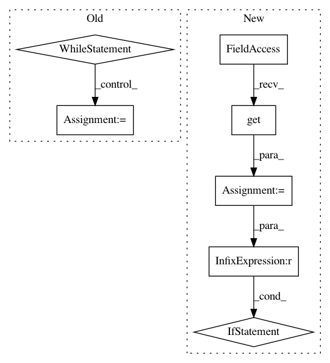

42ad0f227fa39fe9b96bc3e08b2e5704dc157e74,open_seq2seq/encoders/w2l_encoder.py,Wave2LetterEncoder,_encode,#Wave2LetterEncoder#Any#,77
Before Change
layer_repeat_fixed = convnet_layers[idx_convnet]["repeat"]
layer_repeat_moving = layer_repeat_fixed
while layer_repeat_moving != 0:
layer_repeat_moving = layer_repeat_moving - 1
layer_name = self._get_layer(layer_type)
if layer_name == "conv":
ch_out = convnet_layers[idx_convnet]["num_channels"]
conv_block = conv_bn_actv // can add other type of convolutional blocks in future
kernel_size = convnet_layers[idx_convnet]["kernel_size"]
strides = convnet_layers[idx_convnet]["stride"]
padding = convnet_layers[idx_convnet]["padding"]
conv_feats = conv_block(
type=layer_type,
name="conv{}{}".format(
idx_convnet + 1, layer_repeat_fixed + 1 - layer_repeat_moving),
inputs=conv_feats,
filters=ch_out,
kernel_size=kernel_size,
activation_fn=self.params["activation_fn"],
strides=strides,
padding=padding,
regularizer=regularizer,
training=training,
data_format=data_format,
bn_momentum=bn_momentum,
bn_epsilon=bn_epsilon,
)
outputs = tf.nn.dropout(x=conv_feats, keep_prob=dropout_keep_prob)
if data_format == "channels_first":
outputs = tf.transpose(outputs, [0, 2, 1])
return {
After Change
dropout_keep_prob = self.params["dropout_keep_prob"] if training else 1.0
regularizer = self.params.get("regularizer", None)
data_format = self.params.get("data_format", "channels_last")
normalization = self.params.get("normalization", "batch_norm")
normalization_params = {}
if normalization == None:
conv_block = conv_actv
elif normalization == "batch_norm":
conv_block = conv_bn_actv
normalization_params["bn_momentum"] = self.params.get(
"bn_momentum", 0.99)
normalization_params["bn_epsilon"] = self.params.get("bn_epsilon", 1e-3)
conv_inputs = source_sequence
batch_size = conv_inputs.get_shape().as_list()[0]
if data_format == "channels_last":
conv_feats = conv_inputs // B T F
In pattern: SUPERPATTERN
Frequency: 3
Non-data size: 7
Instances
Project Name: NVIDIA/OpenSeq2Seq
Commit Name: 42ad0f227fa39fe9b96bc3e08b2e5704dc157e74
Time: 2018-06-26
Author: xravitejax@gmail.com
File Name: open_seq2seq/encoders/w2l_encoder.py
Class Name: Wave2LetterEncoder
Method Name: _encode
Project Name: facebookresearch/pytext
Commit Name: 5a8868024c4ece64611ae75107b00b66e0892684
Time: 2019-05-24
Author: snl@fb.com
File Name: pytext/data/data.py
Class Name: Data
Method Name: batches
Project Name: theislab/scanpy
Commit Name: 37ef2c69f22a6e2d1232782dd3e192a003731a75
Time: 2020-11-25
Author: michal.klein@protonmail.com
File Name: scanpy/readwrite.py
Class Name:
Method Name: _download